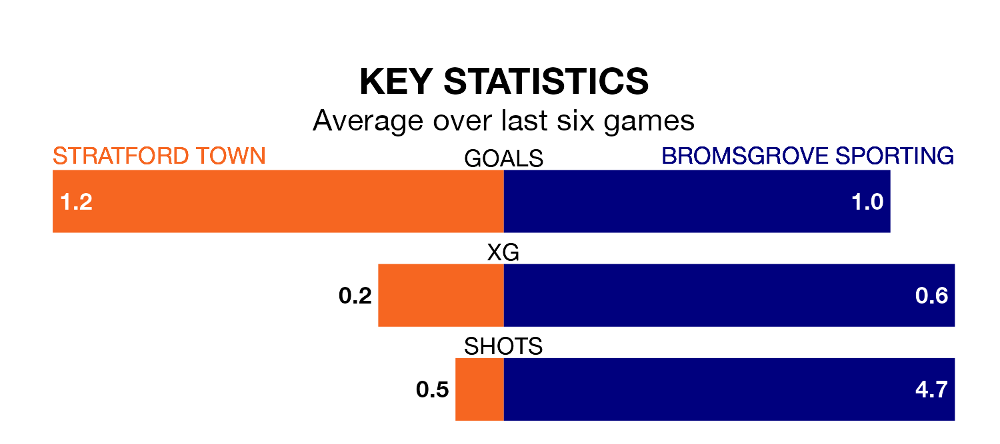

Stratford Town host Bromsgrove Sporting in Saturday's match looking to bounce back from defeat last time out in the Southern League Premier Central.
Town, who sit fourth in the league after 38 games, fell to a 1-0 home defeat to Redditch United on April 6.
They face a Bromsgrove Sporting side who also lost their last match, a 1-0 defeat to Alvechurch, and who sit 18th in the table.
With 42 goals in 38 games so far this season, Bromsgrove Sporting are scoring at below the league average rate with 1.1 goals per game. But they are conceding fewer than average too, letting in 49 goals at a rate of 1.3 per game.
Stratford, meanwhile, are above average scorers, with 1.7 goals per game, compared to a league average of 1.5. They have conceded 1.4 goals per game.
In the last 10 years, Stratford and Bromsgrove Sporting have played each other on seven occasions. Stratford won four of them, Bromsgrove Sporting one, and they drew twice.
On average, Town scored 1.6 goals and Bromsgrove Sporting 1.0 in those matches.
Their last meeting was on November 11, when Stratford won 2-1 away.
Town are in mixed form in the Southern League Premier Central, with three wins and a draw from their last six games.
With a win and a draw over that period, the visitors' form is much worse – they have taken four points from 18, compared to the home team's 10.
Updated: 14:47 (UTC), 09/04/24